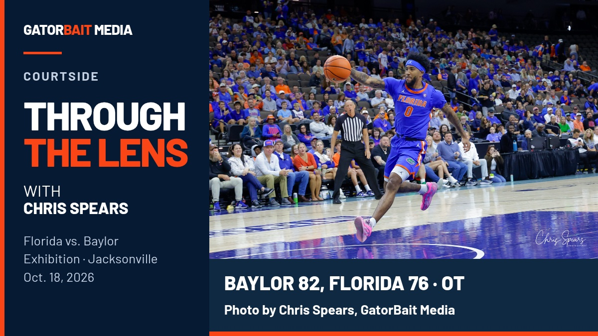

GATORBAIT MEDIA
CREATIVE DRAFT
Through the Lens
with Chris Spears
Chris' current Baylor photograph, presented in full. The signed original stays intact, with the series title and photo credit outside the image.



Caption draft
Add the confirmed live column URL in the platform's link placement before release.
Image alt text
Through the Lens with Chris Spears. A Florida basketball player passes the ball during the Baylor exhibition in Jacksonville. Final score: Baylor 82, Florida 76 in overtime. Photo by Chris Spears, GatorBait Media.